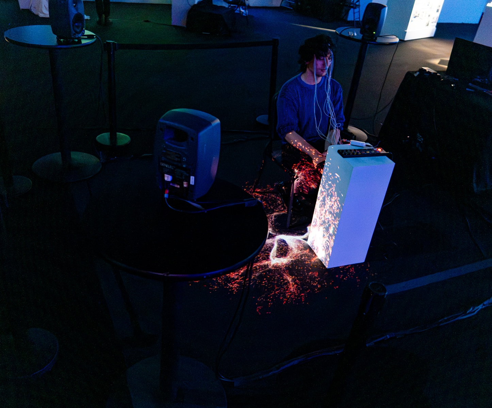
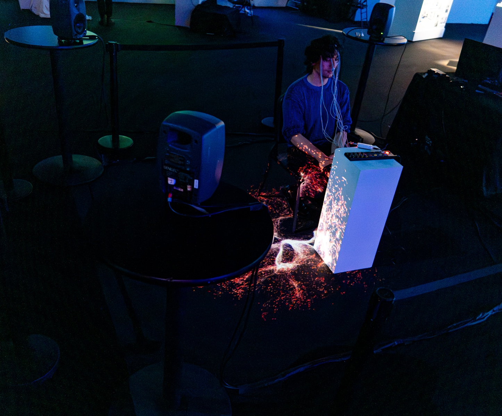

Selected Works
Blindsight
Blindsight is a custom-built wearable I2C motion sensor device built for symbiotic live performance and organic signal processing. This device allows for real-time wireless control of Ableton Live and Max parameters by the magnetic vector, acceleration, angular rate, and gravity of the device's sensors. The first fully functional version was finished in 2024, and work is ongoing to develop additional features.
Using the schematics for CNMAT's MARGO device as a starting point, this device aims for a larger degree of freedom, reliability, and stability, increased Ableton Live integration, and more sensor parameters.
Built using an ESP32, LSM6DS3, and LIS3MDL, the device features 10 degrees of freedom, wireless OSC transmission over Wi-Fi and Bluetooth, 5-7 hours of battery life, and an accompanying Max for Live device with real-time mapping and sensor visualization.
Hyperviolet
Live 3D motion capture performance
Hyperviolet is a work in progress live motion-capture dance performance that is set to premiere at the Tower, San Francisco, in October 2025. Using the Perception Neuron 3 for real-time motion capture in Unreal Engine with live-performed reactive music, this performance explores the use of cutting-edge hybrid technology for performance and mutual interaction through virtual environments.
This work is part of the research I am conducting as a researcher in the World Engines Lab, where I use music and performance to explore the dynamics and emergent interactions observed within the virtual ecology, treating the environment as a dynamic stage for artistic inquiry and performance.
Incoherent Subversion
Essay to be submitted in the Almanac of Artificial Seasons
This paper examines the ongoing formation of a cultural era that is defined by a process of techno-economic consolidation and algorithmic fragmentation. This is contrasted with the purely fragmentary cultural response to the postmodern deconstruction that defined the latter-half of the 20th century and engendered distinct musical counter-cultures. Without the monoculture necessary for these traditional forms of rebellion to function, the musical counter-culture of this nascent era must be radically less fixed in step.
Power and culture are in a contradictory process of becoming simultaneously diffuse and concentrated. As power becomes filtered through a singular techno-economic process, yet survives on a mechanism of granular segmentation, culture is increasingly mediated through monolithic online platforms while being expressed through increasingly fragmented microscenes. AI has an algorithmically-driven teleological imperative to segment and classify artistic production and cultural identities into data-commodities, driving this process further.
The result of these processes is a culture in the West that presents as a diffuse granular flow of micro-identities which manifest too transiently to grasp and reform. These conditions render traditional strategies of détournement obsolete. As systems of control become entrenched in transient and highly-subdivided cultural mechanisms, new forms of subversion become necessary.
Music's interoperability and resistance to fixation make it uniquely suited for navigating these fractured territories by forming unclassifiable assemblages as models for resistance. Performance emerges as a critical space where these assemblages can be constructed, deconstructed, and experienced in their necessary immediacy. Resistance is proposed as an adoption of tactical incoherence by selectively embracing cultural and sonic contradictions that cannot be resolved through traditional frameworks. Rather than seeking retreat or continuing exhausted deconstruction, this positive engagement with cultural breakdown finds opportunities within incoherence itself, suggesting new possibilities for human expression and connection in this rapidly forming era.
A0.gest
Max for Live device
The first release for my DSP studio, Aleph Null. A0.gest is a Max for Live device that uses the acceleration, position, 3D rotation, and cardinal direction of any smartphone to modulate parameters in Ableton Live, as well as allowing the touchscreen to be used as a 2-dimensional matrix modulator.
Each sensor has a discrete map button assigned to each of its axes for a total of 24 mappable inputs, along with a unique real-time visualizer for all 5 of its sensors. Each axis has controls to set its range, and each sensor has a dedicated smoothing slider to smooth out the incoming signal.
A0.gest also supports input from IoT sensors and any device capable of sending OSC.
Event Horizon
Live performance with Fitnesss, VVXXII, 011668, & Cel Genesis
This performance was the debut of my Blindsight device, which was used with live input violin. The violin input was fed into Ableton Live via a piezo microphone, which was then processed by a modified form of my A0.gest Max for Live device. The Blindsight device was mounted on the wrist of my bow arm, and each of its 10 sensors were mapped to various parameters within Ableton Live that were modulating the incoming violin signal.
This allowed for frenetic movement to directly modify the live sound, which in turn informed the movement, forming a closed-loop between the instrument and its processing. Thrashing violent movement was combined with extended scordatura techniques to produce extreme and highly-processed timbres while gradually destroying the violin and bow throughout the process of the performance. As the violin became more damaged, its timbre deteriorated from aggressive and angular until the instrument failed to produce more than soft accidental noises, which continued to be modulated and rephrased through movement until the completion of the performance.
Cascades of Refinement


Debut EP released on Important Records
The techniques that defined Parish's influential early sound have been refined into a flawless hybrid of analog and digital textures which give his post-minimalist compositions an unmistakably personal expressivity.
Classical instruments are mutilated and transmuted into razor-sharp shards of glass suspended on piano wire above warped opalescent metal while never losing sight of their tonal integrity. Much like the impartial juxtaposition Parish employs in his timbral exploration, each composition explores the concepts of beauty and gentleness through and with extremity, violence, and chaos as equal counterparts, with each successive piece refining and relieving the artificial tension between these states. Employing use of the Una Corda, prepared piano, bowed piano, plucked piano, harpsichord, church organ, untuned violin, voice, synthesizers, and resampled field recordings, Cascades of Refinement lies somewhere in the indefinite space between acoustic and electronic and is beholden to neither.
Parish's initial electroacoustic experiments with piano and strings were interrupted by the pandemic lockdown when he was limited to sampled instrumentation and digital processing available on a computer. Out of this necessity evolved an appreciation for the incidental nature of digitally sampled acoustic instrumentation and the unpredictability of its interaction with digital signal processing.
As work on Cascades of Refinement continued and acoustic recording was reintroduced, the focus turned to the tension between recorded and sampled instrumentation, with the goal of integrating the two into a singular indistinguishable material to be warped and shaped together. Each of the four pieces of the Cascade series explores this tension, successively integrating and collapsing their distinction with each piece.
The subtle artifacts of digital processing and incidental mechanical sounds of the acoustic are amplified and given presence alongside the tonal elements of each piece until a point of indivisibility is reached. The sound of a bow scraping along a string or a granular buffer freezing are neither discarded nor hidden, but selected as the ripest material to accompany and structure each composition. Cascades of Refinement is a dialogue between organic and digital, between the mercurial and infinitely reproducible, not as opposites, but as mereologically cohabiting counterparts with equal expressivity.
Irreductions
 

Spatial audiovisual installation showcased at Gray Area, San Francisco in 2023 as part of the Creative Coding Intensive Exhibition and in 2025 in an updated version at the Intersection of Art and Technology - Corporeal Exhibition
Irreductions is an experiment in positive feedback between the human brain and its external representation. Using a modified electroencephalogram (EEG) that measures the electrical activity of the brain, the participant's brainwaves are translated into sonic data in the form of live generative speech and sound using realtime neural audio synthesis. This sound is then spatialized in quadraphonic sound around the participant with each location in space corresponding to activity within discrete regions of the frontal lobe associated with higher level executive function. At the same time, a live 3D audio-reactive particle system is projected around the user. This allows the participant to interface with their own brain activity through sound and visuals.
As the participant's thought processing increases, so too does the corresponding auditory representation of their frontal lobe, which upon being heard by the participant, will then be incorporated into their own frontal lobe activity and fed back into the audio, blurring the lines between the participant's neural activity and its external representation.
The name Irreductions derives from a treatise by the philosopher Bruno Latour of the same name in which he establishes a metaphysical network of interconnected actors, human and inhuman, none of which can be considered either reducible or irreducible to the others. Irreductions seeks to capture this rhizomatic quality between the internal qualitative experience of the participant and the way in which this experience is represented in the external world.
This work is part of an ongoing project to explore methods of collapsing the distance between the body and its expression through sound and music.